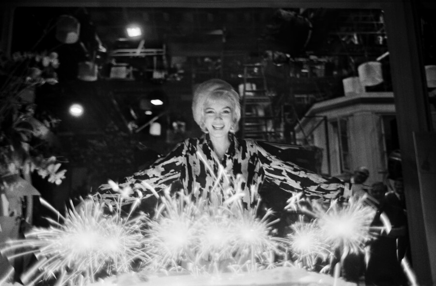

Lawrence Schiller: Motion Pictures
Hilton Contemporary is pleased to announce Lawrence Schiller: Motion Pictures, a dynamic exhibition exploring the intersection of photography and cinematic storytelling through the lens of Lawrence Schiller who will turn 90 this December. Bringing together a selection of Schiller’s most iconic and rarely seen works, the exhibition highlights his unique ability to capture movement, narrative, and cultural history within a single frame.Spanning Schiller’s prolific career, Motion Pictures features photographs taken on and off the sets of legendary films, alongside candid portraits of cultural icons including Marilyn Monroe, Robert Redford, Paul Newman, Muhammad Ali, and Clint Eastwood. Schiller’s role extended beyond photography while working on Butch Cassidy and the Sundance Kid (1968) for which he produced a celebrated body of behind-the-scenes imagery, and also directed several minutes of the film itself. He continued to direct and produce award winning films and television shows, such as Lady Sings the Blues (1972) with Diana Ross, The American Dreamer (1971) with Dennis Hopper, the Emmy Award-winning television mini-series Peter the Great (1986), among others.
Schiller’s career also extends into photojournalism of major historic events. He was assigned to document pivotal moments in American history, including the aftermath of the assassination of Robert F. Kennedy. His expansive knowledge of the industry also led to a career writing for major publications and authoring numerous books.
His access to Marilyn Monroe was particularly profound. He photographed her between 1960 and 1962, capturing a rare and deeply human portrait of one of the most enduring figures in American cultural history. Among these are some of the last photographs of Monroe ever taken on the set of Something’s Got to Give (1962). After this shoot, Schiller met with Marilyn at her Brentwood home on the morning of Saturday, August 4, 1962, the day before her untimely passing. Schiller celebrated Monroe’s 36th birthday with her on the set, and now the Motion Pictures exhibition will celebrate what would be her 100th birthday while honoring her enduring cultural legacy.
The exhibition, Motion Pictures, speaks to Schiller’s distinctive approach, his ability to infuse still images with a sense of motion and narrative tension. Each photograph reads like a film still, inviting viewers to imagine the moments before and after the shutter clicks. Whether capturing Monroe in a moment of quiet reflection or documenting the camaraderie of actors between takes, Schiller reveals the emotional and performative layers which exist beyond the screen.
“Schiller’s work occupies a unique space between photography and film,” says Arica Hilton, CEO and Founder of Hilton Contemporary. “He doesn’t simply document Hollywood. He interprets it, offering images that feel alive with story, atmosphere, and cultural significance.
Lawrence Schiller: Motion Pictures will be on view at Hilton Contemporary June 5th – June 23rd. An opening reception will be held on June 5th from 5–8:00 pm to commemorate what would be Marilyn Monroe’s 100th birthday week. Lawrence Schiller will be in attendance.